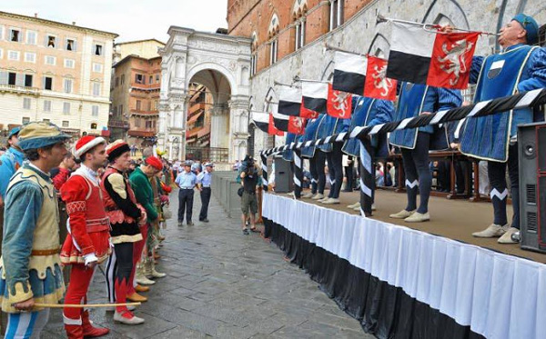

|
- CHI ANDO' A PRENDERE IL CAVALLO IL GIORNO DELLA TRATTA -
|
|
Il Barberesco, detto anche Barbaresco, è il contradaiolo che il Capitano della Contrada nomina ufficialmente con l'incarico di prendersi cura del cavallo che la Contrada avrà in sorte, dal momento dell'assegnazione fino al termine della corsa del Palio e il rientro nella stalla. Era consuetudine che fosse il Barberesco in persona a vestire i colori della propria Contrada il giorno della tratta; ma sul finire degli anni '60 del secolo scorso, alcune Contrade, imitate in breve da tutte le altre, vollero dare l'opportunità anche ad altri contradaioli di provare l'emozione e l'orgoglio di indossare la montura della propria Contrada in quel giorno in cui la "Dea Fortuna" è particolarmente determinante. Per questo motivo il Capitano individua il contradaiolo che nella comunità viene ritenuto il più fortunato con l'auspicio che possa portare nella stalla il miglior cavallo.
  Per aprire la pagina specifica, cliccare sullo stemma della relativa Contrada. 


 


 


Un particolare ringraziamento è dovuto anche agli archivisti delle Contrade che hanno contribuito alla realizzazione di queste 17 pagine. |